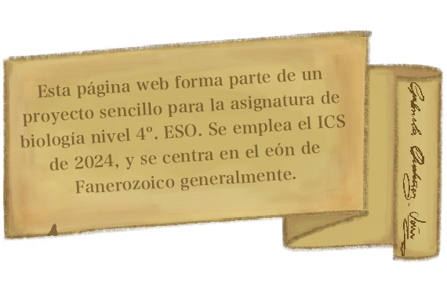
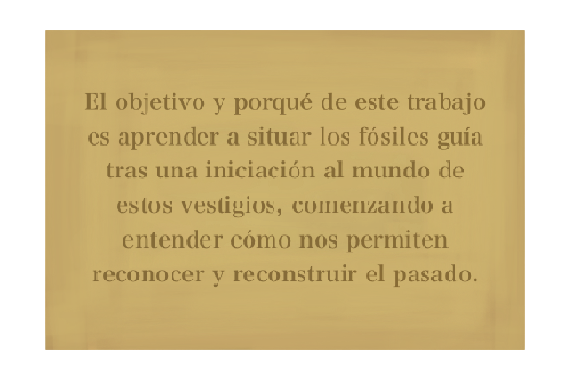

Instrucciones
Para navegar por la línea del tiempo, utiliza las flechas de desplazamiento situadas a la derecha de la ventana. Haz clic en la imagen para acceder a la línea del tiempo completa en Canva. Haz clic en los enlaces de la bibliografía para acceder a más información sobre el tema.